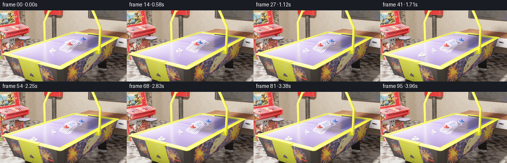

CODING AGENTS AS PIXEL WORLD MODELS
traex/GPT-6.1-Sol · pcve_0000
点击播放 · 原生 RGB 像素
编辑前的完整原视频
上方为编辑结果；原视频是模型获准使用的输入。下方为逐轮保存的编辑候选。
逐轮保存的候选
回放视频、检查图与代码变化。
每份候选均可单独播放。实际图片检查记录在下方工具轨迹中。
候选 01播放与检查图
点击播放 · 原生 RGB 像素

展开代码变化
--- 上一保存版本
+++ 本次保存版本
@@ -0,0 +1,199 @@
+"""Mass-only counterfactual, reconstructed from source RGB samples.
+
+A same-size red rigid mallet has four times its source inertial mass.
+The unaltered blue approach is retained. The collision is treated as an
+approximately elastic equal-material impact: mass ratio 4:1 changes the
+red transfer coefficient to 2/5 and the blue coefficient to -3/5.
+Source-colored mattes and a temporally revealed tabletop preserve texture.
+No learned components, or external physics/rendering engines, are used.
+"""
+from pathlib import Path
+import numpy as np
+import cv2
+from PIL import Image
+from scipy.ndimage import (label, binary_fill_holes, binary_dilation,
+ gaussian_filter, distance_transform_edt)
+import artifact_io
+
+ROOT = Path(__file__).resolve().parent
+# High-resolution crop enclosing all changed mallets, their contact shadows,
+# and their source paths. Coordinates in the original 1280 x 720 source.
+X0, Y0, X1, Y1 = 495, 220, 1015, 470
+
+
+def colored_component(frame, which):
+ r, g, b = frame.astype(np.float32).transpose(2, 0, 1)
+ if which == 0:
+ mask = (r > 1.5*g) & (r > 1.5*b) & (r > 90)
+ else:
+ mask = (b > 1.4*r) & (b > 1.15*g) & (b > 60)
+ mask[:30] = False
+ mask[:,390:] = False
+ labs, n = label(mask)
+ sizes = np.bincount(labs.ravel())[1:]
+ k = int(np.argmax(sizes)) + 1
+ yy, xx = np.where(labs == k)
+ return np.array([xx.mean(), yy.mean()]), labs == k
+
+
+def load_source():
+ low = np.load(ROOT / 'source_pixels.npz')['rgb']
+ capture = cv2.VideoCapture(str(ROOT / 'source_video.mp4'))
+ crops, centers = [], []
+ for t in range(len(low)):
+ ok, bgr = capture.read()
+ if not ok:
+ raise RuntimeError('Source decoding failed at frame %d' % t)
+ crop = cv2.cvtColor(bgr, cv2.COLOR_BGR2RGB)[Y0:Y1, X0:X1]
+ crops.append(crop)
+ centers.append([colored_component(crop, k)[0] for k in (0,1)])
+ capture.release()
+ return low, np.asarray(crops), np.asarray(centers)
+
+
+def reveal_background(crops, centers):
+ h,w = crops.shape[1:3]
+ yy,xx = np.indices((h,w))
+ count = np.zeros((h,w), np.float32)
+ accum = np.zeros((h,w,3), np.float64)
+ for image, points in zip(crops, centers):
+ good = np.ones((h,w),bool)
+ for cx,cy in points:
+ good &= ~((abs(xx-cx)<40)&(yy>cy-35)&(yy<cy+48))
+ accum += image*good[...,None]
+ count += good
+ bg = accum / np.maximum(count,1)[...,None]
+ # The brightest green sample reveals the white floor markings even in
+ # locations shared by the two source footprints at the contact point.
+ best = crops[...,1].argmax(axis=0)
+ fallback = crops[best,yy,xx]
+ unseen = count == 0
+ bg[unseen] = fallback[unseen]
+ # Repair only the few pixels whose floor was never revealed in any frame.
+ r,g,b = bg.transpose(2,0,1)
+ obscured = unseen & (((r-g>35)&(r-b>25)) | ((b-r>48)&(b-g>65)))
+ obscured = binary_dilation(obscured,iterations=2)
+ if obscured.any():
+ bg = cv2.inpaint(np.uint8(np.clip(bg,0,255)),
+ np.uint8(obscured)*255,5,cv2.INPAINT_TELEA).astype(float)
+ return bg.astype(np.float32)
+
+
+def make_sprite(crops, centers, bg, t, which):
+ frame = crops[t].astype(np.float32)
+ point = centers[t,which]
+ yy,xx = np.indices(frame.shape[:2])
+ r,g,b = frame.transpose(2,0,1)
+ if which==0:
+ hue = (r-g>24)&(r-b>23)
+ else:
+ hue = (b-r>42)&(b-g>48)
+ # The original head and short handle are a single connected rigid body.
+ window = (abs(xx-point[0])<37)&(yy>point[1]-31)&(yy<point[1]+22)
+ hue &= window
+ labs,_ = label(hue)
+ k = np.argmax(np.bincount(labs.ravel())[1:])+1
+ solid = binary_fill_holes(labs==k)
+ # Incorporate antialiased silhouettes and the neutral specular highlight.
+ nearby = binary_dilation(solid, iterations=3)
+ delta = frame-bg
+ changed = np.max(abs(delta),axis=2)>9
+ solid |= nearby & changed
+ solid = binary_fill_holes(solid)
+ alpha = gaussian_filter(solid.astype(np.float32),0.65)
+ # Soft contact shadow. Preserve its actual RGB attenuation rather than
+ # copying the floor, which would drag the printed white markings around.
+ reach = distance_transform_edt(~solid)
+ shadow_window = (reach<19)&(yy>point[1]-2)&(yy<point[1]+37)
+ dim = np.maximum(0, -delta.mean(axis=2))
+ shadow_strength = np.clip(dim/165,0,0.32)*shadow_window*(1-alpha)
+ shadow_strength = gaussian_filter(shadow_strength,1.4)
+ # Tight local tensors make subpixel translation inexpensive.
+ cx,cy = np.round(point).astype(int)
+ bounds = (cx-55,cy-43,cx+56,cy+53)
+ x,y,x2,y2=bounds
+ return {'rgb':frame[y:y2,x:x2], 'alpha':alpha[y:y2,x:x2],
+ 'shadow':shadow_strength[y:y2,x:x2], 'origin':np.array([x,y]),
+ 'point':point}
+
+
+def paste_sprite(canvas, sprite, point, angle=0.0):
+ """Rigid image-space translation with a very small inertial yaw."""
+ rgb,alpha,shadow=sprite['rgb'],sprite['alpha'],sprite['shadow']
+ h,w=alpha.shape
+ pivot=sprite['point']-sprite['origin']
+ M=cv2.getRotationMatrix2D(tuple(pivot),angle,1)
+ M[:,2] += point - sprite['point'] + sprite['origin']
+ shape=(canvas.shape[1],canvas.shape[0])
+ a=cv2.warpAffine(alpha,M,shape,flags=cv2.INTER_LINEAR)
+ sh=cv2.warpAffine(shadow,M,shape,flags=cv2.INTER_LINEAR)
+ premult=cv2.warpAffine(rgb*alpha[...,None],M,shape,flags=cv2.INTER_LINEAR)
+ canvas *= (1-sh[...,None])
+ canvas *= (1-a[...,None])
+ canvas += premult
+
+
+def main():
+ low,crops,centers=load_source()
+ bg=reveal_background(crops,centers)
+ red=make_sprite(crops,centers,bg,0,0)
+ # A frame well before contact supplies an entirely unoccluded blue mallet.
+ blue=make_sprite(crops,centers,bg,12,1)
+ # Source positions are indexed from zero; impact starts at about frame 14.
+ contact=14.0
+ red_start=centers[0,0].copy()
+ blue_start=centers[14,1].copy()
+ # Project the observed approach onto the table's screen-space motion axis.
+ direction=centers[12,1]-centers[4,1]
+ direction/=np.linalg.norm(direction)
+ incoming=np.linalg.norm(centers[13,1]-centers[9,1])/4/5
+ vr=2.0/5.0*incoming
+ vb=3.0/5.0*incoming
+ # Coulomb sliding loss on the same surface is acceleration, not force;
+ # thus it remains independent of the changed mallet mass. These modest
+ # losses arrest the separated bodies without further unsupported impacts.
+ friction=0.026
+ out=low.copy()
+ yy,xx=np.indices(bg.shape[:2])
+ region=np.zeros(bg.shape[:2],np.float32)
+ for i in range(96):
+ for cx,cy in centers[i]:
+ region=np.maximum(region,((abs(xx-cx)<49)&
+ (yy>cy-43)&(yy<cy+55)).astype(np.float32))
+ region=gaussian_filter(region,2)
+ records=[]
+ for t in range(96):
+ if t<14:
+ records.append([t,*((centers[t,0]+[X0,Y0])/5),
+ *((centers[t,1]+[X0,Y0])/5)])
+ continue
+ u=float(t)-contact
+ tr=min(u,vr/friction)
+ tb=min(u,vb/friction)
+ dr=vr*tr-0.5*friction*tr*tr
+ db=vb*tb-0.5*friction*tb*tb
+ rp=red_start+direction*(5*dr)
+ bp=blue_start-direction*(5*db)
+ canvas=crops[t].astype(np.float32)*(1-region[...,None])+bg*region[...,None]
+ # Contact ordering reflects the original oblique camera projection.
+ paste_sprite(canvas,blue,bp,angle=-0.8*(1-np.exp(-u/9)))
+ paste_sprite(canvas,red,rp,angle=0.3*(1-np.exp(-u/12)))
+ # Match the source's exact high-quality Lanczos downsampling.
+ rebuilt=np.asarray(Image.fromarray(np.uint8(np.clip(canvas,0,255))).resize(
+ (104,50),Image.Resampling.LANCZOS))
+ out[t,44:94,99:203]=rebuilt
+ records.append([t,*((rp+[X0,Y0])/5),*((bp+[X0,Y0])/5)])
+ # Frame 1 retains the identical initial appearance: changing density does
+ # not change size, color, shape, or instantaneous velocity.
+ out[0]=low[0]
+ artifact_io.save(out,ROOT)
+ np.savetxt(ROOT/'motion_diagnostics.csv',records,delimiter=',',
+ header='frame,red_x,red_y,blue_x,blue_y',comments='')
+ print('Saved',out.shape,'RGB uint8 frames at 24 fps.')
+ print('Impact approach speed %.4f px/frame; heavy red %.4f, rebound %.4f.' %
+ (incoming,vr,vb))
+ print('Resting positions:',records[-1])
+
+
+if __name__=='__main__':
+ main()
可观测工具轨迹
实际执行的命令与返回图片。
命令 1exit 0
/bin/bash -lc "ls -la && cat prompt.txt && printf '\\n---RULES---\\n' && cat GENERATION_RULES.md"
命令 2exit 0
/bin/bash -lc 'cat source_info.json && cat task_spec.json && cat artifact_io.py'
命令 3exit 0
/bin/bash -lc "python - <<'PY'
import numpy as np
z=np.load('source_pixels.npz'); print([(k,z[k].shape) for k in z.files]); a=z[z.files[0]]
print('first RGB common',np.unique(a[0].reshape(-1,3)//16*16,axis=0,return_counts=True))
for t in [0,12,24,36,48,60,72,84,95]:
f=a[t].astype(float); r,g,b=f.transpose(2,0,1); m=(r>g*1.4)&(r>b*1.4)&(r>70); n=(b>r*1.3)&(b>g*1.1)&(b>65); print('frame',t)
for y in range(0,144,3):
s=''
for x in range(0,256,3):
col=f[y:y+3,x:x+3].mean((0,1)); R,G,B=col
if m[y:y+3,x:x+3].sum()>2: c='R'
elif n[y:y+3,x:x+3].sum()>2: c='B'
elif R>G*1.2 and G>B*1.15 and R>85: c='o'
elif max(col)<35: c='#'
elif max(col)<70:c='x'
elif max(col)<110:c='-'
elif max(col)<160:c='.'
else:c=' '
s+=c
print(s)
PY"命令 4exit 0
/bin/bash -lc "python - <<'PY'
import numpy as np
from scipy.ndimage import label
f=np.load('source_pixels.npz')['rgb'];
for t in range(0,96,3):
a=f[t].astype(float); r,g,b=a.transpose(2,0,1)
for name,m in [('red',(r>1.5*g)&(r>1.5*b)&(r>90)),('blue',(b>r*1.4)&(b>g*1.15)&(b>60))]:
m[:45]=0;m[100:]=0;m[:,:75]=0;m[:,170:]=0
lab,n=label(m)
res=[]
for k in range(1,n+1):
y,x=np.where(lab==k)
if len(x)>=6:res.append((len(x),(round(x.mean(),2),round(y.mean(),2)),(x.min(),y.min(),x.max(),y.max())))
print(t,name,res)
print('ROI ascii first')
a=f[0].astype(float)
for y in range(42,90):
s=''
for x in range(100,180):
R,G,B=a[y,x];
if R>1.5*G and R>1.5*B and R>70:c='R'
elif B>1.4*R and B>1.15*G and B>60:c='B'
elif max(R,G,B)<50:c='#'
elif max(R,G,B)<100:c='x'
elif max(R,G,B)<150:c='-'
elif min(R,G,B)<200:c='.'
else:c=' '
s+=c
print(f'{y:3}',s)
PY"命令 5exit 0
/bin/bash -lc "python - <<'PY'
import numpy as np
from scipy.ndimage import label
f=np.load('source_pixels.npz')['rgb'];
for t in range(40):
a=f[t].astype(float); r,g,b=a.transpose(2,0,1);s=[]
for m in [(r>1.5*g)&(r>1.5*b)&(r>90),(b>r*1.4)&(b>g*1.15)&(b>60)]:
m[:50]=0;m[90:]=0;m[:,:90]=0;m[:,177:]=0;lab,n=label(m)
for k in range(1,n+1):
y,x=np.where(lab==k)
if len(x)>=12:s.append((round(x.mean(),2),round(y.mean(),2),len(x)))
print(t,s)
print('ROI intensity source first')
a=f[0];
for y in range(48,89):
s=''
for x in range(115,177):
R,G,B=map(int,a[y,x]); v=(R+G+B)/3
if R>G*1.5 and R>B*1.5:c='R'
elif B>R*1.4 and B>G*1.15:c='B'
else:c='0123456789abcdefghijklmno'[min(24,int(v)//11)]
s+=c
print(y,s)
print('diff masks')
for t in [0,12,16,20,28,35]:
d=np.max(abs(f[t].astype(float)-f[95].astype(float)),axis=2)
print('t',t)
for y in range(46,92):
print(''.join('X' if d[y,x]>50 else '+' if d[y,x]>15 else '.' if d[y,x]>4 else ' ' for x in range(102,181)))
PY"命令 6exit 0
/bin/bash -lc "python - <<'PY'
import numpy as np
f=np.load('source_pixels.npz')['rgb'];
# Inspect difference against the first frame where the blue mallet is far away.
for t in [4,10,22,30]:
d=f[t].astype(int)-f[0].astype(int); mag=np.max(abs(d),2)
print('t',t)
for y in range(46,102):
print(f'{y:3}',''.join('R' if f[t,y,x,0]>f[t,y,x,1]*1.5 and mag[y,x]>12 else 'B' if f[t,y,x,2]>f[t,y,x,0]*1.4 and mag[y,x]>12 else 'X' if mag[y,x]>60 else '+' if mag[y,x]>20 else '.' if mag[y,x]>5 else ' ' for x in range(90,191)))
PY"命令 7exit 0
/bin/bash -lc "python - <<'PY'
import numpy as np
f=np.load('source_pixels.npz')['rgb'].astype(float)
print('Pixel values selected')
for y in [50,55,60,65,70,75,80,85,90]:
print(y,[(x,tuple(f[0,y,x].astype(int))) for x in [105,110,115,120,125,130,135,140,145,150,155,160,165,170,175]])
print('source0 difference 95 ROI along initial red')
for y in range(58,88):
print(y,' '.join('%03d'%np.max(abs(f[0,y,x]-f[95,y,x])) for x in range(126,157)))
PY"命令 8exit 0
/bin/bash -lc "python - <<'PY'
import importlib.util
print('cv2',importlib.util.find_spec('cv2'))
import cv2,numpy as np
cap=cv2.VideoCapture('source_video.mp4'); ok,bgr=cap.read(); a=cv2.cvtColor(bgr,cv2.COLOR_BGR2RGB)
print(a.shape)
# scalar map describing small mallet crop 1.4x output resolution
for y in range(286,361,2):
s=''
for x in range(660,776,2):
R,G,B=map(float,a[y:y+2,x:x+2].mean((0,1)))
if R>G*1.5 and R>B*1.5:c='R'
elif B>R*1.4 and B>G*1.15:c='B'
elif max(R,G,B)<120:c='#'
elif R>G+25 and R>B+10:c='r'
elif min(R,G,B)>240:c='W'
elif min(R,G,B)>218:c='w'
elif max(R,G,B)-min(R,G,B)<20:c='o'
else:c='.'
s+=c
print(y,s)
PY"命令 9exit 0
/bin/bash -lc "python - <<'PY'
import cv2, numpy as np
c=cv2.VideoCapture('source_video.mp4');a=[]
for t in range(96):
ok,b=c.read()
if t in [0,10,20,30,40,95]:a.append(cv2.cvtColor(b,cv2.COLOR_BGR2RGB))
a=np.array(a)
for t,f in zip([0,10,20,30,40,95],a):
R,G,B=f.astype(float).transpose(2,0,1); m=(R>1.5*G)&(R>1.5*B)&(R>90);m[:250]=0;m[450:]=0;m[:,:450]=0;m[:,800:]=0
y,x=np.where(m); print(t,x.mean()/5,y.mean()/5,'bounds',x.min()/5,x.max()/5,y.min()/5,y.max()/5)
# show diff highres excluding subtle noise
for i,t in [(0,0),(3,30)]:
d=np.max(abs(a[i].astype(float)-a[-1].astype(float)),2);print('diff highres t',t)
for y in range(290 if i==0 else 350,380 if i==0 else 440,2):
s=''
for x in range(640 if i==0 else 505,780 if i==0 else 640,2):
v=d[y:y+2,x:x+2].mean(); s+= 'X' if v>60 else '+' if v>20 else '.' if v>5 else ' '
print(y,s)
PY"命令 10exit 0
/bin/bash -lc "python - <<'PY'
import numpy as np
from scipy.ndimage import label
f=np.load('source_pixels.npz')['rgb'];c=[]
for t in range(96):
R,G,B=f[t].astype(float).transpose(2,0,1);row=[]
for m in [(R>1.5*G)&(R>1.5*B)&(R>90),(B>R*1.4)&(B>G*1.15)&(B>60)]:
m[:50]=0;m[90:]=0;m[:,:90]=0;m[:,177:]=0;l,n=label(m);k=np.argmax(np.bincount(l.ravel())[1:])+1;y,x=np.where(l==k);row.append([x.mean(),y.mean()])
c.append(row)
c=np.array(c)
for name,q,p in [('blue',c[:14,1,0],np.arange(14)),('red',c[16:30,0,0],np.arange(14))]:
print(name,'linear',np.polyfit(p,q,1),'quadratic',np.polyfit(p,q,2), 'rms',np.std(q-np.polyval(np.polyfit(p,q,2),p)))
PY"命令 11exit 0
/bin/bash -lc "python - <<'PY'
import numpy as np
f=np.load('source_pixels.npz')['rgb'][0].astype(float)
for y in range(30,85):
s=''
for x in range(150,231):
R,G,B=f[y,x];
if R>1.5*G and R>1.5*B and R>80:c='R'
elif B>R*1.4 and B>G*1.15 and B>60:c='B'
elif R>1.2*G and G>1.15*B and R>70:c='o'
elif max(R,G,B)<50:c='#'
elif max(R,G,B)<100:c='x'
elif max(R,G,B)<150:c='-'
elif min(R,G,B)>220:c='W'
elif min(R,G,B)>185:c='w'
elif min(R,G,B)>150:c='.'
else:c=','
s+=c
print(y,s)
PY"命令 12exit 0
/bin/bash -lc "python - <<'PY'
import cv2,numpy as np
from scipy.ndimage import label
cap=cv2.VideoCapture('source_video.mp4'); vals=[]
for t in range(40):
_,f=cap.read(); f=cv2.cvtColor(f,cv2.COLOR_BGR2RGB).astype(float);R,G,B=f.transpose(2,0,1);row=[]
for m in [(R>1.5*G)&(R>1.5*B)&(R>90),(B>R*1.4)&(B>G*1.15)&(B>60)]:
m[:250]=0;m[450:]=0;m[:,:450]=0;m[:,885:]=0; l,n=label(m);k=np.argmax(np.bincount(l.ravel())[1:])+1;y,x=np.where(l==k);row.append([x.mean()/5,y.mean()/5,len(x), (x.max()-x.min()+1)/5,(y.max()-y.min()+1)/5])
vals.append(row)
for t in range(0,40,2):print(t,np.round(vals[t],3))
c=np.array(vals)
for name,q in [('blue',c[:14,1,0]),('red',c[16:30,0,0])]:
print(name,np.polyfit(np.arange(len(q)),q,2))
PY"命令 13exit 0
/bin/bash -lc "python - <<'PY'
import numpy as np,cv2
from PIL import Image
c=cv2.VideoCapture('source_video.mp4');_,b=c.read();a=cv2.cvtColor(b,cv2.COLOR_BGR2RGB);lo=np.load('source_pixels.npz')['rgb'][0]
for kind in [Image.Resampling.NEAREST,Image.Resampling.BILINEAR,Image.Resampling.BICUBIC,Image.Resampling.LANCZOS,Image.Resampling.BOX]:
v=np.array(Image.fromarray(a).resize((256,144),kind)); print(kind,np.abs(v.astype(int)-lo).mean(),np.max(abs(v.astype(int)-lo)))
for name,flag in [('area',cv2.INTER_AREA),('linear',cv2.INTER_LINEAR),('cubic',cv2.INTER_CUBIC),('lanczos',cv2.INTER_LANCZOS4)]:
v=cv2.resize(a,(256,144),interpolation=flag); print(name,np.abs(v.astype(int)-lo).mean(),np.max(abs(v.astype(int)-lo)))
PY"命令 14exit 0
/bin/bash -lc "python - <<'PY'
import numpy as np
f=np.load('source_pixels.npz')['rgb'][0].astype(float)
for y in range(30,116,2):
s=''
for x in range(58,198,2):
R,G,B=f[y:y+2,x:x+2].mean((0,1));
if R>1.5*G and R>1.5*B and R>90:c='R'
elif B>R*1.4 and B>G*1.15 and B>60:c='B'
elif R>200 and G>200 and B<160:c='Y'
elif max(R,G,B)<80:c='#'
elif max(R,G,B)<130:c='x'
elif max(R,G,B)<185:c='-'
elif min(R,G,B)>237:c='W'
elif min(R,G,B)>216:c='w'
elif B>R+20 and B>G+25:c='p'
else:c='.'
s+=c
print(f'{y:3}',s)
PY"命令 15exit 0
/bin/bash -lc "python - <<'PY'
import numpy as np
f=np.load('source_pixels.npz')['rgb'].astype(float)
# first late frame: white stationary structures via brightness thresholds in ROI
for t in [0,95]:
print('FRAME',t)
for y in range(50,91):
s=''
for x in range(105,181):
R,G,B=f[t,y,x]
if R>1.5*G and R>1.5*B and R>90:c='R'
elif B>R*1.4 and B>G*1.15 and B>60:c='B'
elif R>240 and G>232 and B>230:c='W'
elif R>225 and G>220 and B>225:c='w'
elif B>R+20 and B>G+25:c='.'
else:c=' '
s+=c
print(y,s)
PY"命令 16exit 0
/bin/bash -lc "cat > .tmp/inspect_numeric.py <<'PY'
import numpy as np,cv2
from scipy.ndimage import label
cap=cv2.VideoCapture('source_video.mp4'); frames=[]; cs=[]
for t in range(96):
_,bgr=cap.read();f=cv2.cvtColor(bgr,cv2.COLOR_BGR2RGB)[220:470,495:1015]; frames.append(f)
R,G,B=f.astype(float).transpose(2,0,1);row=[]
for m in [(R>1.5*G)&(R>1.5*B)&(R>90),(B>R*1.4)&(B>G*1.15)&(B>60)]:
m[:30]=0;m[:,390:]=0;l,n=label(m);k=np.argmax(np.bincount(l.ravel())[1:])+1;y,x=np.where(l==k);row.append([x.mean(),y.mean()])
cs.append(row)
f=np.array(frames);c=np.array(cs);Y,X=np.indices(f.shape[1:3]); sums=np.zeros(f.shape[1:],float);ct=np.zeros(f.shape[1:3],int)
for i in range(96):
good=np.ones(X.shape,bool)
for q in c[i]:good &= ~((abs(X-q[0])<40)&(Y>q[1]-35)&(Y<q[1]+48))
sums+=f[i]*good[:,:,None];ct+=good
print('centers',c[0],c[14],c[95]);print('missing pixels',np.sum(ct==0));y,x=np.where(ct==0);print('bounds',x.min(),x.max(),y.min(),y.max())
B=sums/np.maximum(ct,1)[:,:,None]
# bright temporal fallback vs opaque colored
idx=f.astype(float).mean(3).argmax(0);temp=f[idx,Y,X];B[ct==0]=temp[ct==0]
for color,t in [('red',0),('blue',10)]:
q=c[t,0 if color=='red' else 1]; rx,ry=map(lambda a:int(round(a)),q);s=f[t,ry-40:ry+50,rx-45:rx+46].astype(float);bg=B[ry-40:ry+50,rx-45:rx+46];d=s-bg
print(color,'diff range',d.min(),d.max())
for yy in range(0,90,3):
out=''
for xx in range(0,91,3):
R,G,b=s[yy:yy+3,xx:xx+3].mean((0,1)); v=d[yy:yy+3,xx:xx+3].mean((0,1));
if color=='red' and R-G>35 and R-b>35:ch='R'
elif color=='blue' and b-R>35 and b-G>35:ch='B'
elif v.mean()<-18:ch='x'
elif v.mean()<-6:ch='.'
else:ch=' '
out+=ch
print(out)
PY
python .tmp/inspect_numeric.py"命令 17exit 0
/bin/bash -lc "python - <<'PY'
exec(open('.tmp/inspect_numeric.py').read().split(\"for color,t\")[0])
idx=f[:,:,:,1].argmax(0);P=f[idx,Y,X].astype(float);R,G,b=P.transpose(2,0,1);m=((R-G>35)&(R-b>25))|((b-R>48)&(b-G>65));print('unexposed',m.sum());ys,xs=np.where(m);print('bounds',xs.min(),xs.max(),ys.min(),ys.max())
for yy in range(65,150,3):
print(yy,''.join('X' if m[yy:yy+3,xx:xx+3].any() else ' ' for xx in range(175,270,3)))
PY"命令 18exit 0
/bin/bash -lc "cat > generate.py <<'PY'
\"\"\"Mass-only counterfactual, reconstructed from source RGB samples.
A same-size red rigid mallet has four times its source inertial mass.
The unaltered blue approach is retained. The collision is treated as an
approximately elastic equal-material impact: mass ratio 4:1 changes the
red transfer coefficient to 2/5 and the blue coefficient to -3/5.
Source-colored mattes and a temporally revealed tabletop preserve texture.
No learned components, or external physics/rendering engines, are used.
\"\"\"
from pathlib import Path
import numpy as np
import cv2
from PIL import Image
from scipy.ndimage import (label, binary_fill_holes, binary_dilation,
gaussian_filter, distance_transform_edt)
import artifact_io
ROOT = Path(__file__).resolve().parent
# High-resolution crop enclosing all changed mallets, their contact shadows,
# and their source paths. Coordinates in the original 1280 x 720 source.
X0, Y0, X1, Y1 = 495, 220, 1015, 470
def colored_component(frame, which):
r, g, b = frame.astype(np.float32).transpose(2, 0, 1)
if which == 0:
mask = (r > 1.5*g) & (r > 1.5*b) & (r > 90)
else:
mask = (b > 1.4*r) & (b > 1.15*g) & (b > 60)
mask[:30] = False
mask[:,390:] = False
labs, n = label(mask)
sizes = np.bincount(labs.ravel())[1:]
k = int(np.argmax(sizes)) + 1
yy, xx = np.where(labs == k)
return np.array([xx.mean(), yy.mean()]), labs == k
def load_source():
low = np.load(ROOT / 'source_pixels.npz')['rgb']
capture = cv2.VideoCapture(str(ROOT / 'source_video.mp4'))
crops, centers = [], []
for t in range(len(low)):
ok, bgr = capture.read()
if not ok:
raise RuntimeError('Source decoding failed at frame %d' % t)
crop = cv2.cvtColor(bgr, cv2.COLOR_BGR2RGB)[Y0:Y1, X0:X1]
crops.append(crop)
centers.append([colored_component(crop, k)[0] for k in (0,1)])
capture.release()
return low, np.asarray(crops), np.asarray(centers)
def reveal_background(crops, centers):
h,w = crops.shape[1:3]
yy,xx = np.indices((h,w))
count = np.zeros((h,w), np.float32)
accum = np.zeros((h,w,3), np.float64)
for image, points in zip(crops, centers):
good = np.ones((h,w),bool)
for cx,cy in points:
good &= ~((abs(xx-cx)<40)&(yy>cy-35)&(yy<cy+48))
accum += image*good[...,None]
count += good
bg = accum / np.maximum(count,1)[...,None]
# The brightest green sample reveals the white floor markings even in
# locations shared by the two source footprints at the contact point.
best = crops[...,1].argmax(axis=0)
fallback = crops[best,yy,xx]
unseen = count == 0
bg[unseen] = fallback[unseen]
# Repair only the few pixels whose floor was never revealed in any frame.
r,g,b = bg.transpose(2,0,1)
obscured = unseen & (((r-g>35)&(r-b>25)) | ((b-r>48)&(b-g>65)))
obscured = binary_dilation(obscured,iterations=2)
if obscured.any():
bg = cv2.inpaint(np.uint8(np.clip(bg,0,255)),
np.uint8(obscured)*255,5,cv2.INPAINT_TELEA).astype(float)
return bg.astype(np.float32)
def make_sprite(crops, centers, bg, t, which):
frame = crops[t].astype(np.float32)
point = centers[t,which]
yy,xx = np.indices(frame.shape[:2])
r,g,b = frame.transpose(2,0,1)
if which==0:
hue = (r-g>24)&(r-b>23)
else:
hue = (b-r>42)&(b-g>48)
# The original head and short handle are a single connected rigid body.
window = (abs(xx-point[0])<37)&(yy>point[1]-31)&(yy<point[1]+22)
hue &= window
labs,_ = label(hue)
k = np.argmax(np.bincount(labs.ravel())[1:])+1
solid = binary_fill_holes(labs==k)
# Incorporate antialiased silhouettes and the neutral specular highlight.
nearby = binary_dilation(solid, iterations=3)
delta = frame-bg
changed = np.max(abs(delta),axis=2)>9
solid |= nearby & changed
solid = binary_fill_holes(solid)
alpha = gaussian_filter(solid.astype(np.float32),0.65)
# Soft contact shadow. Preserve its actual RGB attenuation rather than
# copying the floor, which would drag the printed white markings around.
reach = distance_transform_edt(~solid)
shadow_window = (reach<19)&(yy>point[1]-2)&(yy<point[1]+37)
dim = np.maximum(0, -delta.mean(axis=2))
shadow_strength = np.clip(dim/165,0,0.32)*shadow_window*(1-alpha)
shadow_strength = gaussian_filter(shadow_strength,1.4)
# Tight local tensors make subpixel translation inexpensive.
cx,cy = np.round(point).astype(int)
bounds = (cx-55,cy-43,cx+56,cy+53)
x,y,x2,y2=bounds
return {'rgb':frame[y:y2,x:x2], 'alpha':alpha[y:y2,x:x2],
'shadow':shadow_strength[y:y2,x:x2], 'origin':np.array([x,y]),
'point':point}
def paste_sprite(canvas, sprite, point, angle=0.0):
\"\"\"Rigid image-space translation with a very small inertial yaw.\"\"\"
rgb,alpha,shadow=sprite['rgb'],sprite['alpha'],sprite['shadow']
h,w=alpha.shape
pivot=sprite['point']-sprite['origin']
M=cv2.getRotationMatrix2D(tuple(pivot),angle,1)
M[:,2] += point - sprite['point'] + sprite['origin']
shape=(canvas.shape[1],canvas.shape[0])
a=cv2.warpAffine(alpha,M,shape,flags=cv2.INTER_LINEAR)
sh=cv2.warpAffine(shadow,M,shape,flags=cv2.INTER_LINEAR)
premult=cv2.warpAffine(rgb*alpha[...,None],M,shape,flags=cv2.INTER_LINEAR)
canvas *= (1-sh[...,None])
canvas *= (1-a[...,None])
canvas += premult
def main():
low,crops,centers=load_source()
bg=reveal_background(crops,centers)
red=make_sprite(crops,centers,bg,0,0)
# A frame well before contact supplies an entirely unoccluded blue mallet.
blue=make_sprite(crops,centers,bg,12,1)
# Source positions are indexed from zero; impact starts at about frame 14.
contact=14.0
red_start=centers[0,0].copy()
blue_start=centers[14,1].copy()
# Project the observed approach onto the table's screen-space motion axis.
direction=centers[12,1]-centers[4,1]
direction/=np.linalg.norm(direction)
incoming=np.linalg.norm(centers[13,1]-centers[9,1])/4/5
vr=2.0/5.0*incoming
vb=3.0/5.0*incoming
# Coulomb sliding loss on the same surface is acceleration, not force;
# thus it remains independent of the changed mallet mass. These modest
# losses arrest the separated bodies without further unsupported impacts.
friction=0.026
out=low.copy()
yy,xx=np.indices(bg.shape[:2])
region=np.zeros(bg.shape[:2],np.float32)
for i in range(96):
for cx,cy in centers[i]:
region=np.maximum(region,((abs(xx-cx)<49)&
(yy>cy-43)&(yy<cy+55)).astype(np.float32))
region=gaussian_filter(region,2)
records=[]
for t in range(96):
if t<14:
records.append([t,*((centers[t,0]+[X0,Y0])/5),
*((centers[t,1]+[X0,Y0])/5)])
continue
u=float(t)-contact
tr=min(u,vr/friction)
tb=min(u,vb/friction)
dr=vr*tr-0.5*friction*tr*tr
db=vb*tb-0.5*friction*tb*tb
rp=red_start+direction*(5*dr)
bp=blue_start-direction*(5*db)
canvas=crops[t].astype(np.float32)*(1-region[...,None])+bg*region[...,None]
# Contact ordering reflects the original oblique camera projection.
paste_sprite(canvas,blue,bp,angle=-0.8*(1-np.exp(-u/9)))
paste_sprite(canvas,red,rp,angle=0.3*(1-np.exp(-u/12)))
# Match the source's exact high-quality Lanczos downsampling.
rebuilt=np.asarray(Image.fromarray(np.uint8(np.clip(canvas,0,255))).resize(
(104,50),Image.Resampling.LANCZOS))
out[t,44:94,99:203]=rebuilt
records.append([t,*((rp+[X0,Y0])/5),*((bp+[X0,Y0])/5)])
# Frame 1 retains the identical initial appearance: changing density does
# not change size, color, shape, or instantaneous velocity.
out[0]=low[0]
artifact_io.save(out,ROOT)
np.savetxt(ROOT/'motion_diagnostics.csv',records,delimiter=',',
header='frame,red_x,red_y,blue_x,blue_y',comments='')
print('Saved',out.shape,'RGB uint8 frames at 24 fps.')
print('Impact approach speed %.4f px/frame; heavy red %.4f, rebound %.4f.' %
(incoming,vr,vb))
print('Resting positions:',records[-1])
if __name__=='__main__':
main()
PY
python generate.py"命令 19exit 0
/bin/bash -lc "python - <<'PY'
import numpy as np
from scipy.ndimage import label
z=np.load('pixels.npz')['pixels']; f=np.stack([z>>16,(z>>8)&255,z&255],axis=-1).transpose(2,0,1,3).astype(np.uint8)
s=np.load('source_pixels.npz')['rgb']
print('Output',f.shape,'first identical',np.array_equal(f[0],s[0]),'before impact',np.array_equal(f[:14],s[:14]))
for t in [14,15,16,18,22,30,40,60,95]:
R,G,B=f[t].astype(float).transpose(2,0,1)
out=[]
for m in [(R>1.5*G)&(R>1.5*B)&(R>90),(B>R*1.4)&(B>G*1.15)&(B>60)]:
m[:50]=0;m[90:]=0;m[:,:95]=0;m[:,177:]=0;l,n=label(m);q=[]
for k in range(1,n+1):
y,x=np.where(l==k)
if len(x)>=5:q.append((len(x),round(x.mean(),2),round(y.mean(),2)))
out.append(q)
print(t,out)
# inspect foreground/background difference numerically
for t in [14,30,95]:
d=np.max(abs(f[t].astype(float)-s[0].astype(float)),2);print('diff first t',t)
for y in range(51,86):
print(y,''.join('R' if f[t,y,x,0]>1.5*f[t,y,x,1] and f[t,y,x,0]>1.5*f[t,y,x,2] and d[y,x]>10 else 'B' if f[t,y,x,2]>1.4*f[t,y,x,0] and f[t,y,x,2]>1.15*f[t,y,x,1] and d[y,x]>10 else 'X' if d[y,x]>60 else '+' if d[y,x]>20 else '.' if d[y,x]>5 else ' ' for x in range(100,181)))
PY
ls -lh pixels.npz index.html inspection.png transition_check.png generate.py && ls frames | wc -l"保存候选 1 份；完成命令 19 次；可验证图片返回 0 张。原始 API 响应与完整日志保留在本地。